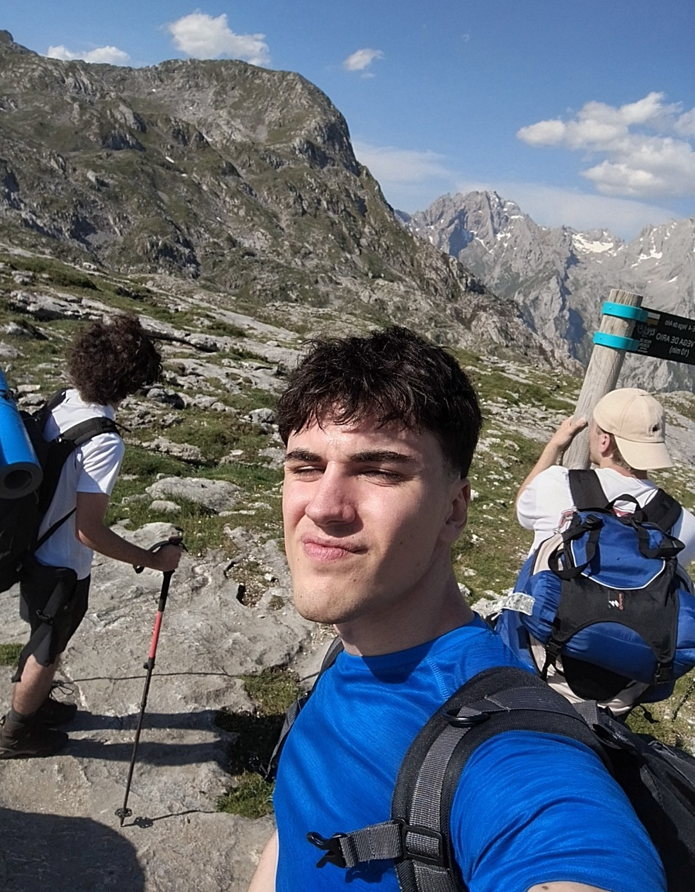
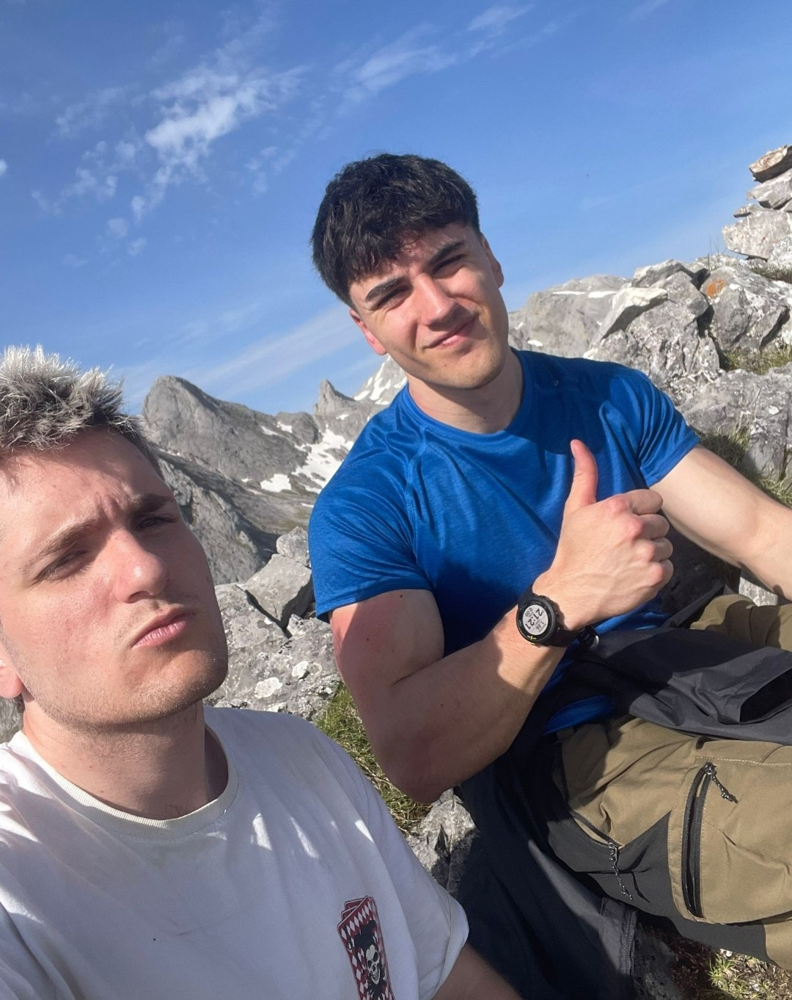
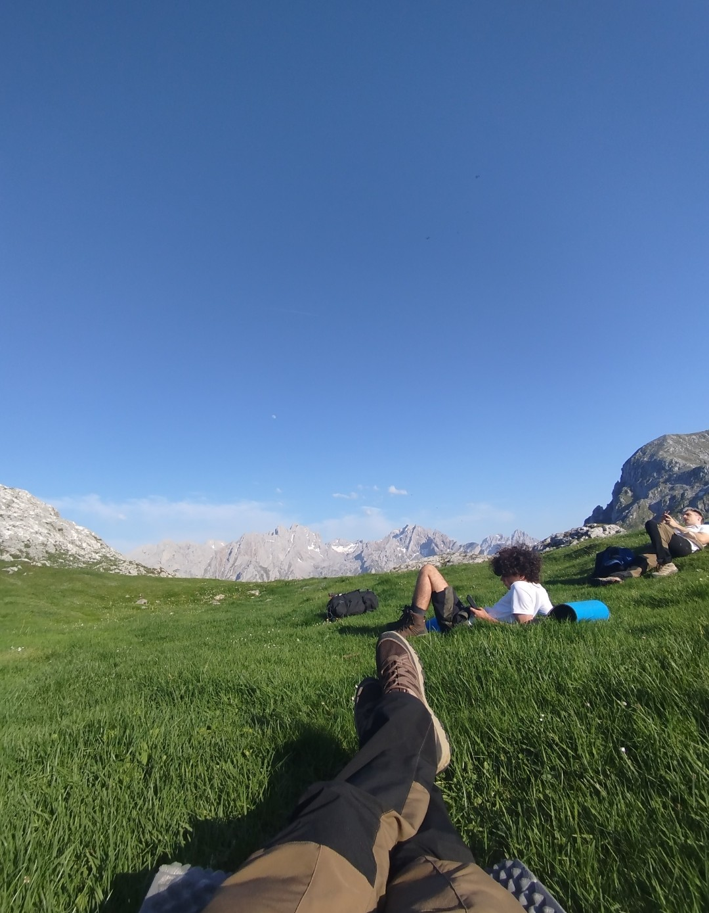
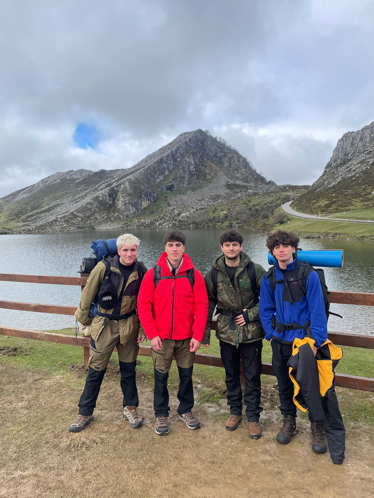
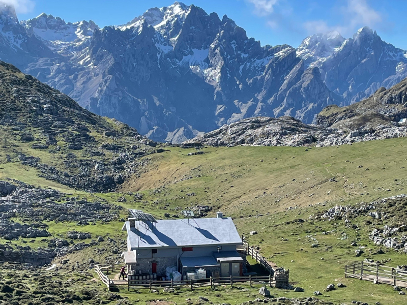
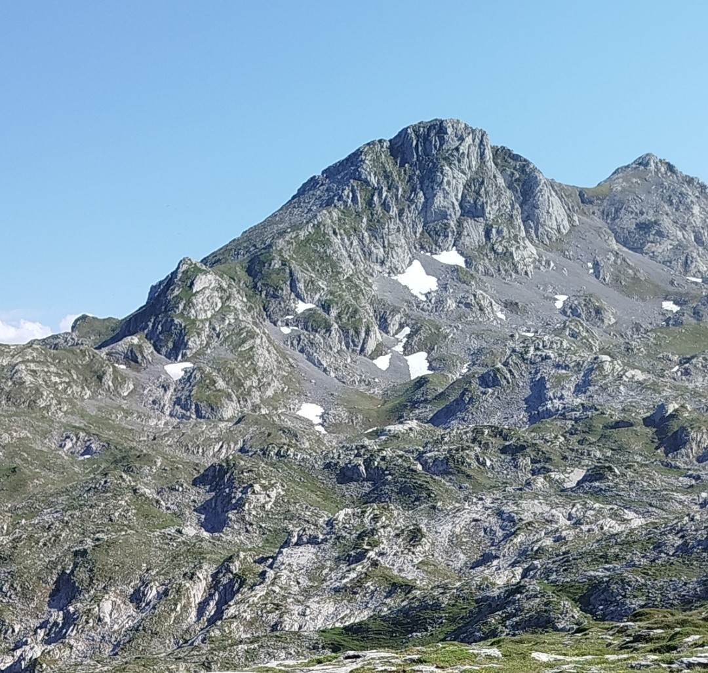
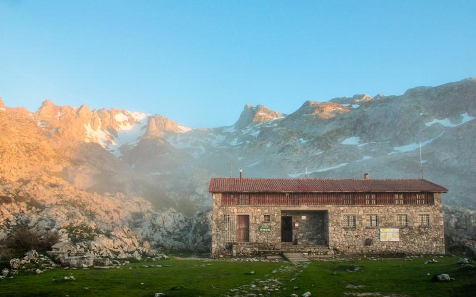
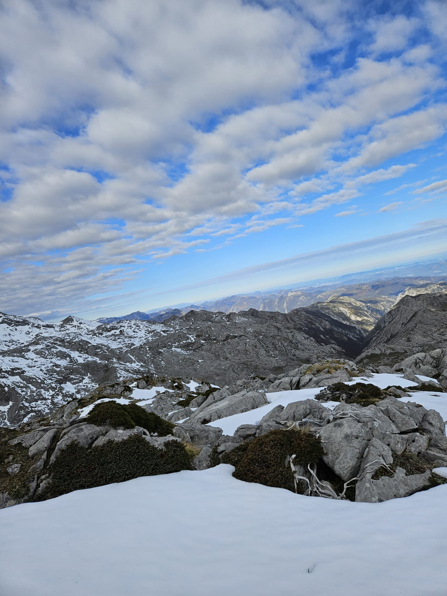
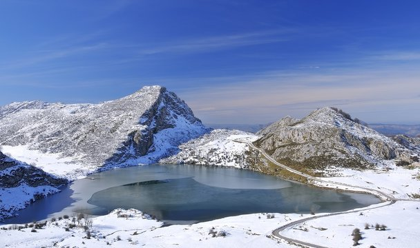
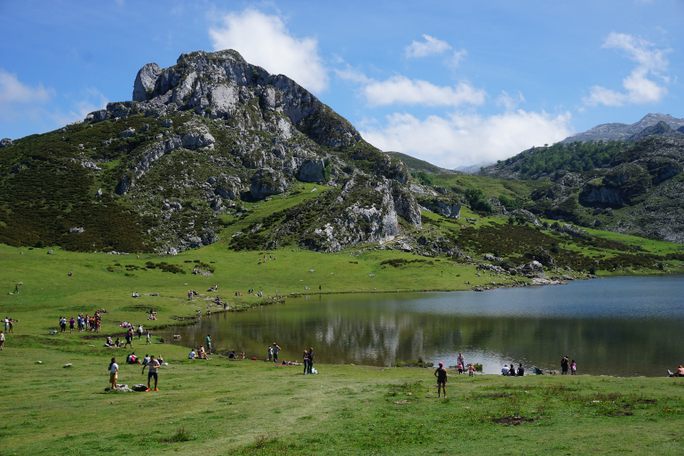

Mis aventuras en
los Picos de Europa
Recuerdos de nuestras aventuras en los Picos de Europa.




Cumbres y Parajes

Vega de Ario
Altiplanicie caliza con vistas al mar y al interior del macizo. Un refugio de montaña en un entorno de belleza insuperable, con los picos asomando entre la niebla.

Pico Jultayu
Cumbre dominante del macizo occidental que ofrece unas vistas panorámicas únicas: desde el Cantábrico hasta los Picos Centrales, pasando por Vega de Ario.

Pico Cuvicente
Una de las cimas más accesibles que supera los 2.000 m. La ruta desde Vegarredonda es técnicamente asequible, pero la recompensa visual es de alta montaña.

Vegarredonda
Refugio y vega de montaña que sirve de base para ascender al Cuvicente y el Jultayu. El hayedo y la fauna salvaje hacen del acceso una experiencia en sí misma.

Pico Catalimpó
Cima discreta pero con carácter propio, frecuentada por rebecos. Desde su cima se disfruta de una perspectiva diferente de los lagos de Covadonga y el macizo.

Lago Enol
Uno de los lagos glaciares más famosos de España. Sus aguas esmeralda reflejan los picos circundantes y constituyen el punto de inicio de múltiples rutas de montaña.

Lago Ercina
El hermano mayor del Enol, rodeado de praderas alpinas y majadas tradicionales. En primavera, las flores y la fauna hacen de este entorno un paraíso natural.
El Macizo en el Mapa
Los Picos de Europa se extienden entre Asturias, Cantabria y Castilla y León, en el norte de España.